Building the stock holding box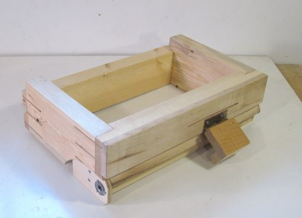 This is what the finished box looks like. The box slides side to side on tracks in the main sled. There is an angled half-dovetail groove on the front and a square groove on the back to guide the box's side to side movement.An idler wheel on the front keeps the box pressed against the guide on the front to take up any play in the system and add a little bit of friction to the side-to-side movement.
A T-nut on the side of the box engages with a 3/8" 16 threads
per inch screw to move the box side-to-side.
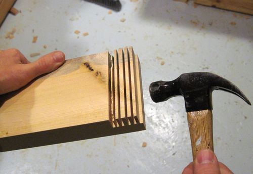 The box is joined by rabbet joints in the corners. If you build a second jig, the corners of the box would be an ideal place to use some box joints made with this jig, but lets assume you don't already have one of these jigs to start with.
Make several cuts with the table saw, then tap out the remaining material with a hammer.
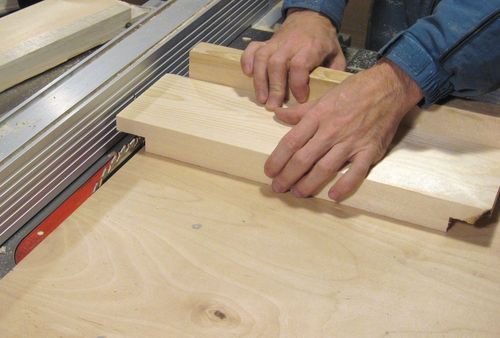 After removing the bulk of the material from the rabbet, put the work piece back on the saw and move it back and forth side to side as you slowly push your table saw sled or miter gauge forward over the blade. This cleans up the bottom of the rabbet, making sure it's smooth and flat.
Note that I set the fence such that the work piece hits the fence when it's
at its furthest position over the blade. That way, I can just move the work piece back and
forth quickly without worrying about moving it too far into the blade.
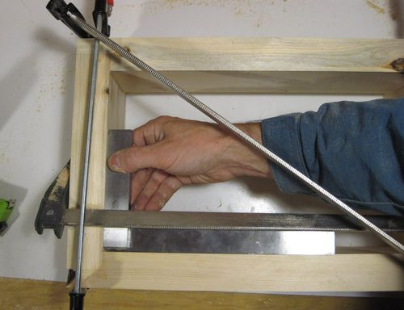 Gluing the box together. Rabbet joints make it much easier to line up the parts when gluing up. I'm very careful that the box ends up square. The right side of the box (furthest from the gearing) can be used to cut tenons, so the square-ness of the box is very important.
I found my box to be off by just a hair after I clamped the joints so I put
a clamp on a diagonal to force into square while the glue dries.
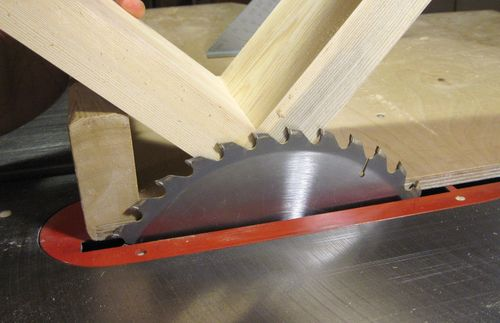 Once the glue is dry, it's time to cut slots for the splines into the corners. These slots should be cut to a depth where the saw blade will just barely not cut into the inside of the box. In this photo, I'm checking my blade height before making the cuts.
Use the thickest sawblade you have. If your thickest saw blade is a thin
kerf blade, that's ok too. It wouldn't be a good idea to widen the slots
by making multiple cuts because the slots then wouldn't all be
precisely the same width.
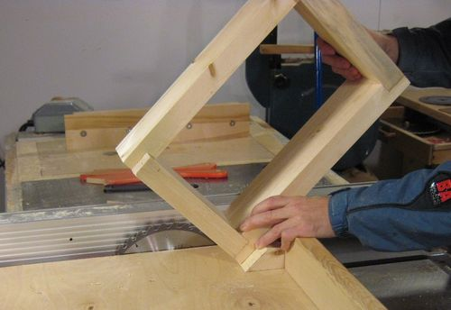 I made a small wedge to help me hold the jig at a 45 degree angle as I'm passing it over the blade. This operation is best done with a table saw sled. If you don't already have one, I recommend building one.
I set the fence of the table saw so that the box's top is touching
the fence as I make the cuts. This helps me get the splines the same
distance from the top of the box on all four corners.
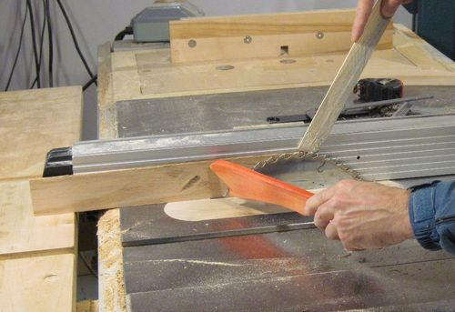 Cut the splines from hardwood. I always cut my splines a little thicker than needed and then pass them between the blade and the fence to trim them to final thickness for consistency. This is not a safe operation. A zero clearance insert in the saw is a must. Otherwise the piece is going to get sucked into the opening next to the saw blade. I'm using a thin piece of wood to push the work piece past the blade. It's not unlikely that this piece gets caught in the blade, so I'm holding it at an angle where it won't hurt my hand if the saw blade snags it.
You could also cut a notch in the top of your work piece so that you could hook
a push stick into it to pull the piece past the blade.
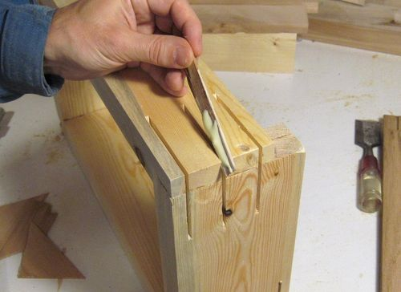
Gluing the splines in. I start by spreading glue inside my cuts with a thin
wood splint as well as on both sides of the spline to be inserted.
Only apply glue to one slot and spline at a time. The glue
makes the wood swell a bit and it may become hard to insert a precisely fitting
spline once the wood has had time to swell up.
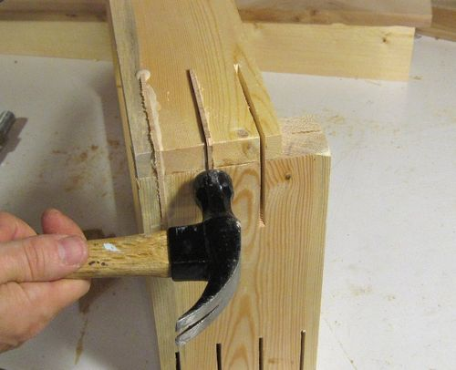
I usually tap the splines in with a hammer. It's tempting to hit the corner
of the spline, but that just breaks it. Hit the sides of the spline as shown.
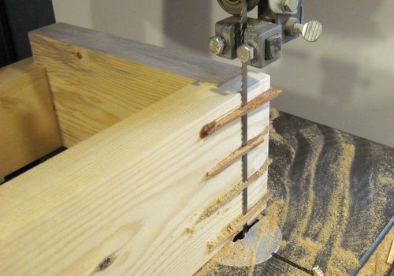 The quickest way I found for trimming the splines flush is to put the whole box on the bandsaw. Then using a chisel to flatten what is left. A belt sander works even faster.
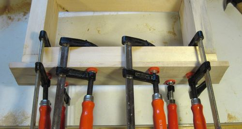
I'm adding a 1 cm thick piece of maple to the front of the box. The harder
wood gets less marked up from clamping stock to it. The half-dovetail
also gets cut into this piece of wood, giving it a harder bearing surface.
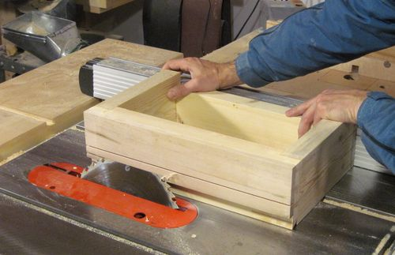 To cut the half dovetail, I tilt the saw blade 30 degrees towards the fence, then push the box past the blade while I'm pulling the box against the fence. If your saw is a left tilt saw, you will have to move your fence to the left of the blade and do it on the other side.
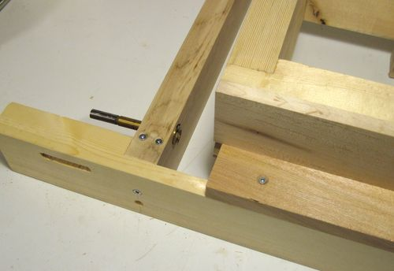
To get the precise location of where the T-nut needs to go I clamped a 7/8"
drill bit in the part of my frame that I had already built. When the box is
slid up aginst the drill the point of the drill will mark the center
position onto the box.
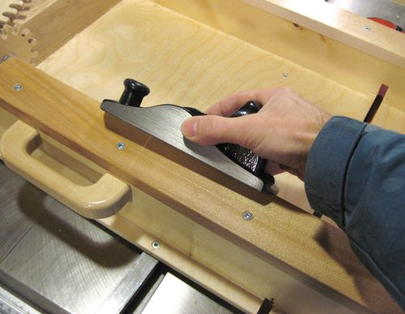 You will probably need to chamfer the corner of the half-dovetailed front rail because it's not possible to cut all the way into the corner of the dovetail on the box with a sawblade. It helps to do this before everything is done so that your center position won't be affected by it.
Also note the nice big handle on the jig. You can use any drawer handles,
but if you want the handle to look the same, refer to my web article
about making drawer
handles for dimensions and tips to making them. In fact, this handle
is a spare handle I made when I made the batch of handles described in
that article.
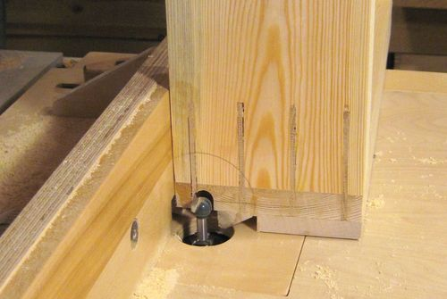 I used a 1/2" diameter round router bit to cut out a slot for where the threaded rod needs to go. I made this cut in a few passes of increasing depth to avoid cutting away too much at a time with the router bit. A square ended router bit would work just as well. You could even cut this slot with a dado blade.
Before making this cut, I marked a circle around the center of where my t-nut needs
to go, because I'm cutting away the actual mark that I transferred from the frame.
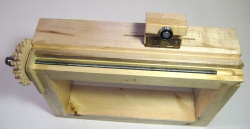
This photo better illustrates how the slot is utilized in the finished box.
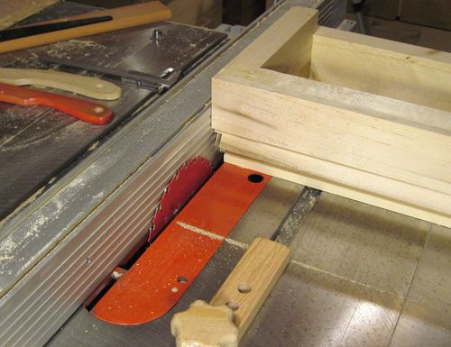 Next, I cut a space for where a piece of birch plywood to mount the T-nut is to go. The easiest was to put a small saw blade in the saw and make a series of cuts
I'm using the non-fingered part of my fingerboard as a back-stop so that
I'm pushing the box the same distance
every time. A 6" dado blade would be ideal for cutting out this slot, but my dado
is a little larger so I used my smallest saw blade.
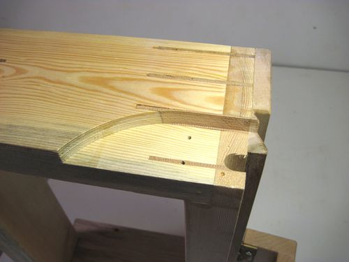
Here's the cut out cavity. The screw holes are from mounting the piece of plywood
to the box. I took the photo after I made the piece of plywood. Do not pre-drill
the screw holes. It's easier to just drill them through the plywood piece.
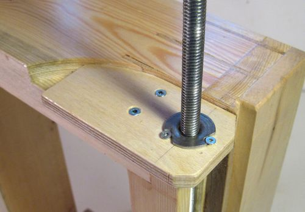 Make the piece of plywood, screw it in place and again use the technique described earlier to transfer the center onto the plywood with the clamped in drill. Drill a hole just large enough for the neck of the T-nut. Place the T-nut into the hole with the prongs against the wood and tap it to let the prongs leave small indentation in the wood. Then drill 1/16" holes where the prongs marked the wood. To mount the T-nut, its best to squeeze it together with the wood in a vise.
Next drill some holes for some #6 countersink screws next to the T-nut's prongs.
The screws are there to keep the T-nut from getting pulled out of the plywood.
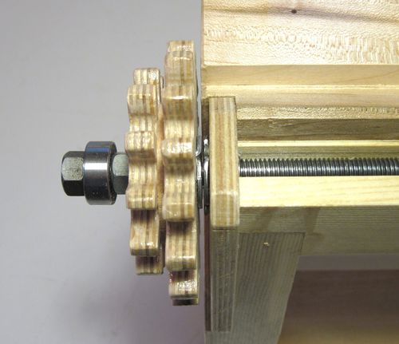
This photo shows how he gear cluster almost touches the
box when screwed all the way in. The use of countersink screws to lock in the T-nut
causes minimal interference, so that the shaft can be screwed in so far that the
T-nuts almost touch.
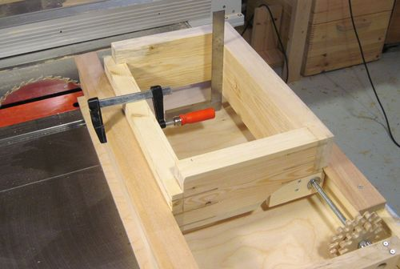 With the frame of the jig mostly built I attached the half dovetail on the operator side of the jig. I slide the jig onto the half dovetail and then made sure that the side of the box is vertical with a square and clamped the piece of wood that is to be the guide on the back against the box. I next marked the top edge of the clamped-to piece against the box. This will tell me where the top edge of the slot on the back of the box needs to be so that the box will rest exactly level on the rails.
I made a series of cuts in the box to cut out a slot half a millimeter wider than the
rail it is to slide around. That was fairly straight forward so I didn't take
a photo of that step.
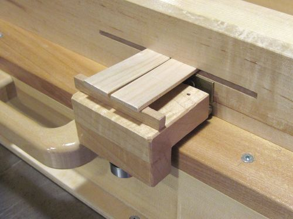
Next I need to cut a slot in the box for the pieces of wood that act as the idle tensioner
springs to be inserted. The slot is just a plunge cut slot with the table saw.
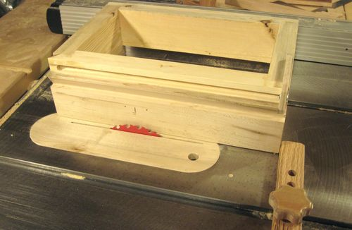
I marked where the slot's center should be. I'm using my featherbord hold down to
provide some sort of back-stop for the box. A block of wood clamped to the fence
would be even better. I set my fence so that I can just
set my box against it and get the right lateral position for the slot.
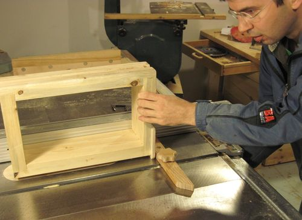 I cut the slot by raising the spinning blade in to the box. Note my back stop for the box, which keeps the blade from kicking it back towards me.
I had to make several cuts to get the right width of the slot. The important thing is to
remember how many turns to crank the blade up to raise it to the same height
each time.
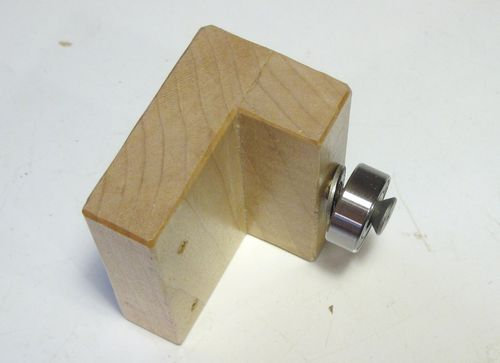
The idler pulley assembly is just two pieces of hardwood glued together. I'm using
a big countersink screw and a washer to lock the bearing in place.
For this photo the screw is only screwed in part-way to illustrate how
it goes together.
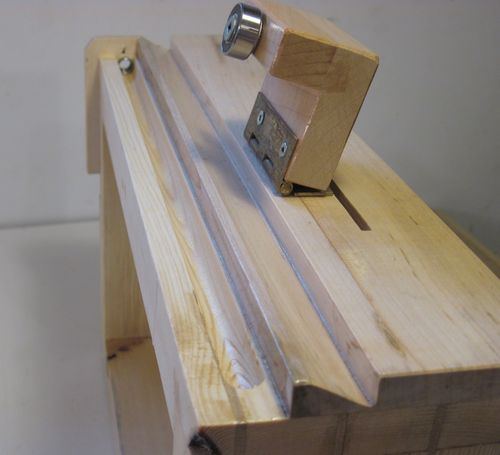 The block is mounted to the box with a hinge.
With the pieces of wood stuck in the slot acting as a tensioner spring the bearing is pressed
against the frame of the jig. This in turn presses the half dovetail together,
taking up any slack in the jig.
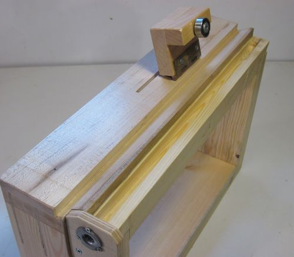
Another view of the finished box, just for completeness.
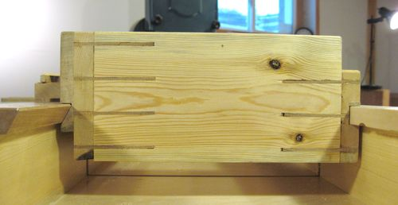 This photo shows the box mounted on its rails of the frame which was also completed.
A note about the dovetail at left - some people have modified the design
a little, but having the dovetail on the operator side and angled down
is very important to the function of the jig. That dovetail, with the idler
roller pushing it tight is the main position reference for the box.
The downward angle helps to keep the box from getting pushed up as it's
pushed forward over the blade when making a cut.
At the same time, the top horizontal surface helps keep the box in its
same vertical position even when not making a cut.
|